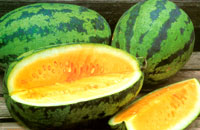
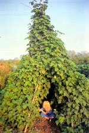
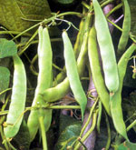
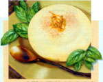

Issue # 200 - October/November 2003
Garden & Yard
In her book Melons For The Passionate Grower, Amy Goldman notes, "There's nothing more stunning than a platter of sliced watermelon with flesh tones of creamy white, salmon, canary yellow, psychedelic orange and pink lemonade."
It's no accident she chooses 'Orangeglo' as one of her favorites: Better than red-fleshed types for flavor, this winner has sweet, deep-orange flesh that hints of tropical fruit. It is, in fact, the best tasting melon I've ever tried.
Resistant to wilt and insects, the strong, healthy and prolific vines produce large green-striped melons.
Seed is available from me at Baker Creek Heirloom Seed Co. [ www.rareseeds.com; (417) 924-8917]; from Sand Hill Preservation Center [ www.sandhillpreservation.com; (563) 246-2299]; and from Seed Savers Exchange (SSE) members.
JERE GETTLE
Mansfield, Missouri
'Romano' pole snap bean, the original Italian variety popular in Europe, was introduced to the United States in the 1950s. Enormously productive, vigorous vines produce wide, flat, stringless pods that remain tender even as the beans inside swell.
This bean is unique among the hundreds of snap beans I've grown for its tenderness and rich flavor. The beans are so tender, they must be only gently cooked or they turn to mush.
This variety also has become a preeminent freezer bean, retaining both flavor and texture well. In addition to being a superlative snap bean, it is an excellent green-shell variety, and one of the most sought-after dry minestrone beans. Cooked, the large dried beans develop a meaty flavor and smooth texture that is unsurpassed.
The bush 'Romanos,' while also tasty, can't beat the old pole variety for flavor or texture.
Seed is available from Comstock, Ferre & Co. [ www.comstockferre.com; (860) 571-6590]; Heirloom Seeds [ www.heirloomseeds.com; (412) 384-0852]; Vermont Bean Seed Co. [ www.vermontbean.com; (800) 349-1071]; and SSE members.
DAVID CAVAGNARO
Decorah, Iowa
T his Russian family heirloom is just starting to receive recognition among serious tomato growers in the United States, and it's sure to become a favorite. The medium-sized, deep-red fruits are firm-fleshed and meaty, with a sweet, juicy, full-bodied flavor. They're a wonderful choice for salads and sandwiches.
The original seed came to me from my housekeeper, Lubov Koniva, a native of Krasnodar, Russia. Her family has been growing these tomatoes since the 1880s; female family members pass the seed down from generation to generation. Lubov's daughter, who still lives in Russia, sent a handful of the seeds to her mother here, but the enve lope was damaged in transit and only six seeds arrived. I grew them out, and have been sharing seeds with others ever since.
Everyone who has tried them raves about both their flavor and growth habits. The plants are fast to germinate and grow, often producing true leaves only three days after germination.
And, because they are adapted to Krasnodar, where winters are bitterly cold and summers brutally hot, the tomato is capable of setting fruit in weather extremes.
As far as I know, I am the only U.S. source of seed, which I will make available to Mother Earth News readers for $3.50 a packet while supplies last.
MARIANA BELFER
2701 Voorhies Ave.
Brooklyn, NY 11235
Grdengrl@optonline.net
Yellow crookneck is a mainstay among my summer squash varieties. Sometimes called "early yellow crookneck," it is the bright yellow squash with the little crooked tail.
They grow on a bush, rather than a trailing vine; the plants have large, five-lobed leaves and stems with prominent bristles.
Today, many commercial growers prefer straightneck squash because they are easier to harvest, ship and store, but the old-fashioned crooknecks have a flavor the modern straightnecks can't touch.
They are best at about 6 inches long, but can be used much larger. In fact, my mom prefers them just a little past their prime, when their skins start to turn from buttery-yellow to light orange. She says they taste "squashier" at that point.
Whatever size, they have a sweet, nutty flavor that you just don't find anywhere else. When rolled in cornmeal and fried, they take on a balance of flavors that is the essence of Southern cooking. When steamed, they hold together well, and just a touch of lemon juice brings out that nutty flavor. I love to use the overgrown ones in pickles, too. When sliced thinly and included in your favorite bread-and-butter pickle mix, they are both colorful and tasty.
Seed is available from Abundant Life Seed Foundation [ www.abundantlifeseed.org; (360) 385-5660]; Peaceful Valley Farm Supply [ www.groworganic.com; (530) 272-4769]; and R.H. Shumway's Seeds [ www.rhshumway.com; (800) 342-9461]
MELODY ROSE
Benton, Kentucky
Mother Earth News
|
 Jere Gettle 'Romano' pods |
 David Cavagnaro (2) |
 |
|
 |
|
|